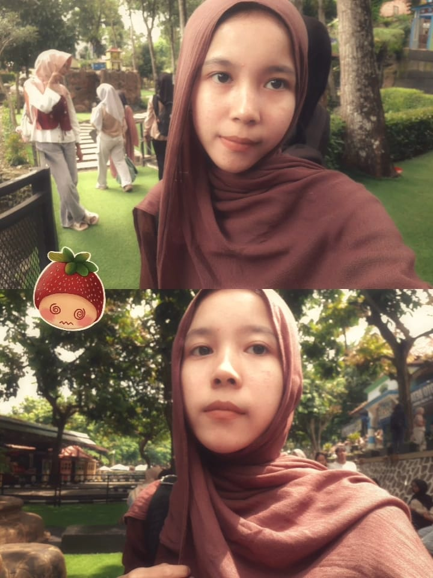
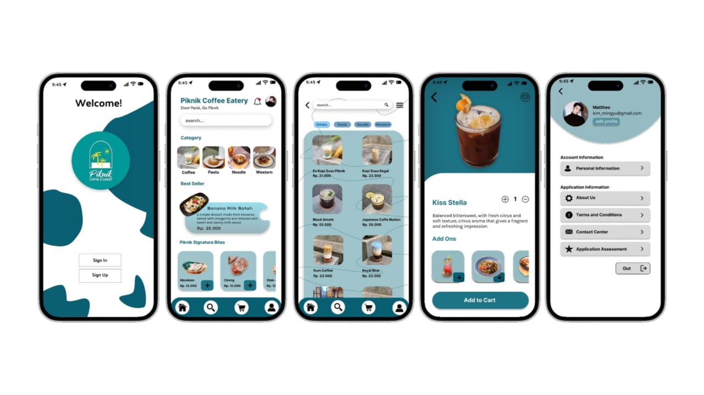
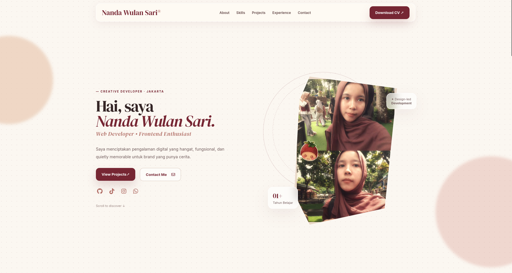
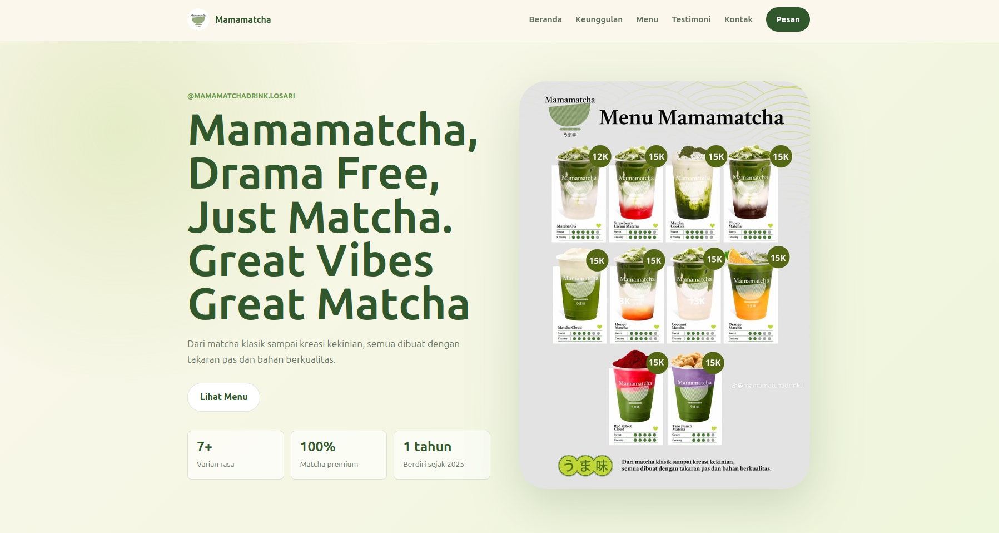

Frontend
HTML · CSS
Responsive Web
— BASED IN CENTRAL JAVA
Aspiring Frontend Developer
Saya menciptakan pengalaman digital yang hangat, fungsional, dan quietly memorable untuk brand yang punya cerita.
Scroll to discover ↓
01 — TENTANG SAYA
Saat ini saya adalah siswi jurusan Rekayasa Perangkat Lunak (RPL). Ketertarikan saya pada dunia teknologi bermula dari rasa penasaran bagaimana sebuah visual yang indah bisa diubah menjadi kode website yang fungsional. Melalui pengalaman belajar di sekolah dan program Magang (Internship) di Perwira Media, saya mengasah keahlian dalam membangun antarmuka web yang responsif, rapi, dan nyaman digunakan. Saya selalu bersemangat untuk mengeksplorasi teknologi baru dan menuangkan ide-ide kreatif ke dalam baris kode.
02 — KEAHLIAN
HTML · CSS
Responsive Web
MySQL
Database
Figma
Canva
Teamwork · Problem Solving
Communication
03 — PROJEK SAYA

Sebuah ruang digital penjelajah rasa yang menyajikan kehangatan kopi dan ragam menu kuliner santai.
FIgma · UI/UX

Rumah digital personal yang dirancang minimalis dan responsif untuk merangkum seluruh perjalanan belajar, skill, dan projek kreatif saya.
HTML · CSS

Sebuah rumah digital hangat untuk varian minuman matcha lokal dan cerita di baliknya.
Vibe Coding · HTML · CSS
04 — PENGALAMAN
Magang di Perwira Media Membantu membangun antarmuka web yang responsif, rapi, dan fungsional bersama tim kreatif.
Aktif mengikuti kegiatan ekskul jurusan selama kelas 10, berfokus mempelajari dasar-dasar bahasa pemrograman PHP, logika algoritma, dan struktur pemrograman web.
05 — HUBUNGI SAYA
Terima kasih telah berkunjung ke portofolio saya. Jika kamu tertarik untuk berdiskusi tentang proyek, kolaborasi, atau peluang kerja lainnya, silakan hubungi saya. Saya akan sangat senang untuk terhubung denganmu!
wulansarinanda3@gmail.com ↗